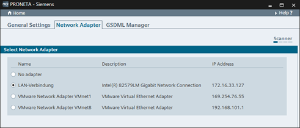

在“设置”(Settings) 窗口中，有三种不同的选项卡可用：
常规设置
网络适配器
GSDML 管理器
这些模式用于调整 PRONETA Basic 的操作细节。
在此可以更改用于 PRONETA Basic 的网络适配器。

将显示 PC 上找到的以太网适配器列表，在此选择适用的适配器。
如果未选择适配器，则仅可用 PRONETA Basic 的离线功能（当比较两个离线拓扑时的离线模式和比较模式）。